Classical ciphers and their cryptanalysis: breakthroughs#
“The enemy knows the system being used.” – Claude Shannon, Communication Theory of Secrecy Systems, 1949
For most of its history cryptography was a contest between clerks who scrambled letters by hand and analysts who unscrambled them without the key. Each cipher on this page was invented to defeat the previous attack, and each fell to a new idea: counting letters, finding the key length, exploiting a machine’s structure, or measuring how much the ciphertext gives away.
This chronology traces the ideas behind cybersecuritykit.classical,
from al-Kindi’s frequency analysis to the 2020 solution of the Zodiac 340.
Every cipher acts on the 26 letters of cybersecuritykit.constants.ALPHABET,
written as numbers \(0, \dots, 25\), and \(a \bmod 26\) is
a % 26. Each entry states the problem, gives the mechanism and its key
equation, and links the code and a gallery example that reproduce it. The
texts and keys are small and the searches bounded, so every example runs in
seconds. Topics shared with blockchainkit, the one-time pad and perfect
secrecy, are taught there in full and only summarized here.
c. 850 – al-Kindi’s frequency analysis#
A substitution cipher replaces each plaintext letter by a fixed ciphertext letter. The simplest is the shift (Caesar) cipher, which moves every letter \(k\) places along the alphabet. The Baghdad philosopher al-Kindi, in his Manuscript on Deciphering Cryptographic Messages, observed that a substitution leaves the letter counts of the language intact: the most common ciphertext letter stands for the most common plaintext letter. He told the reader to count the letters of a long ordinary text, count those of the ciphertext, and match them.
For a shift cipher there are only 26 keys, so the modern form tries each shift \(k\) and keeps the decryption whose letter counts \(O_i\) are closest to the English expectations \(E_i\), measured by Pearson’s statistic:
The correct shift gives a \(\chi^2\) many times smaller than any other. Frequency analysis made every monoalphabetic cipher insecure, however mixed its alphabet, and it remained the analyst’s first tool for a thousand years.
Implementation: cybersecuritykit.classical.systems.frequency.break_shift_cipher()
scores all 26 shifts with
cybersecuritykit.classical.systems.frequency.chi_squared(); the English
letter table is Lewand’s, where al-Kindi matched ranks by hand.
References: I. A. Al-Kadi, “Origins of cryptology: the Arab contributions”, Cryptologia 16(2), 97–126 (1992). DOI.
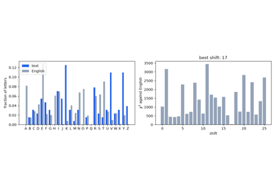
Frequency analysis breaks the shift cipher (al-Kindi, c. 850)
c. 1467 – Alberti’s cipher disk#
Frequency analysis works because one plaintext letter always becomes the same ciphertext letter. Leon Battista Alberti, the Florentine architect, broke that link in De componendis cifris. His disk had a fixed outer ring with the plain alphabet and a turning inner ring with a mixed alphabet. After every few letters the clerk turned the inner ring one place, so the substitution itself changed through the message. This was the first polyalphabetic cipher.
With a mixed alphabet \(\sigma\) on the inner ring, a starting offset \(s\) and a turn every \(d\) letters, the \(j\)-th letter is enciphered as
A common letter like E is now spread over many ciphertext letters, and the single-letter counts flatten out.
Implementation: cybersecuritykit.classical.systems.alberti.alberti_encrypt()
turns the disk one step every period letters; Alberti’s own disk had 20
Latin letters and signalled turns with capital letters inside the text.
References: L. B. Alberti, De componendis cifris (Rome, c. 1467). D. Kahn, The Codebreakers (New York: Macmillan, 1967), ch. 4.
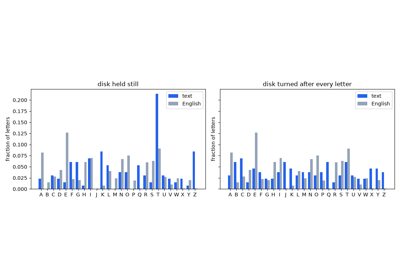
The cipher disk turns the alphabet (Alberti, c. 1467)
1553 – Bellaso’s keyword cipher#
Alberti’s disk changes alphabet on a fixed schedule. Giovan Battista Bellaso let a memorable keyword choose the alphabets instead: each keyword letter names a shift, and the keyword is repeated along the message. The scheme was later misattributed to Blaise de Vigenère and carries his name. For three centuries it was called le chiffre indéchiffrable.
With a keyword \(k_0 k_1 \dots k_{n-1}\) of length \(n\),
Every letter of the plaintext is shifted by one of \(n\) amounts in turn, so the ciphertext is \(n\) interleaved shift ciphers. The cipher is strong only as long as the analyst cannot find \(n\).
Implementation: cybersecuritykit.classical.systems.vigenere.vigenere_encrypt()
repeats the keyword over the letters only; Bellaso’s tables used a 22-letter
alphabet and reciprocal pairs of letters.
References: G. B. Bellaso, La cifra del Sig. Giovan Battista Bellaso (Venice, 1553). D. Kahn, The Codebreakers (1967), ch. 4.
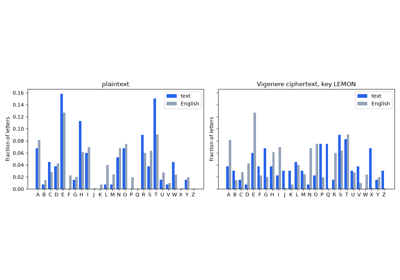
A keyword picks the alphabets (Bellaso, 1553)
1854 – Wheatstone’s Playfair cipher#
Charles Wheatstone looked for a cipher a soldier could use by hand that hid single-letter frequencies. His answer enciphers pairs of letters. The key fills a 5 × 5 square (I and J share a cell), the plaintext is split into digraphs with an X between doubled letters, and each pair is replaced by three rules: letters in the same row move one cell right, letters in the same column move one cell down, and otherwise each takes the letter in its own row and the other’s column. Lyon Playfair promoted it to the British government, and it served in the Boer War and the First World War.
For a pair at cells \((r_1, s_1)\) and \((r_2, s_2)\) with \(r_1 \ne r_2\) and \(s_1 \ne s_2\), the rectangle rule is
There are \(25 \times 24 = 600\) digraphs rather than 26 letters, so the statistics are far flatter. They are not flat enough: a pair AB and its reverse BA always encipher to reversed pairs, and common English digraphs still show through in long messages.
Implementation: cybersecuritykit.classical.systems.playfair.playfair_encrypt()
builds the square with
cybersecuritykit.classical.systems.playfair.playfair_square() and pads
an odd message with X.
cybersecuritykit.classical.systems.playfair.break_playfair() recovers
the square by simulated annealing on English letter pairs, after Cowan
(2008); the historical attacks worked by hand from probable words.
References: D. Kahn, The Codebreakers (1967), ch. 6.
1863 – Kasiski’s examination#
The keyword cipher falls once its period is known, because each column of letters taken every \(n\) places is a shift cipher. Friedrich Kasiski, a retired Prussian infantry officer, published the way to find \(n\). Charles Babbage had found the same attack earlier but never published it.
When a fragment of plaintext such as THE recurs at a distance that is a multiple of the keyword length, the same keyword letters lie over it, and the ciphertext repeats too. Collect the distances \(d_1, d_2, \dots\) between repeated ciphertext trigrams; the key length divides most of them:
Chance repeats add stray factors, so the examination counts how many distances each candidate factor divides and keeps the largest well-supported one.
Implementation: cybersecuritykit.classical.systems.kasiski.kasiski_examination()
counts factors of the gaps between repeated fragments up to max_period.
References: F. W. Kasiski, Die Geheimschriften und die Dechiffrir-Kunst (Berlin: E. S. Mittler und Sohn, 1863).
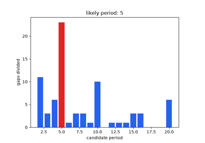
Repeated fragments give the key length (Kasiski, 1863)
1917 – Vernam’s cipher and the two-time pad#
Gilbert Vernam of AT&T built a teleprinter that combined each 5-bit character of a message with a character from a punched key tape, using exclusive or. Joseph Mauborgne added the rule that the tape must be random and used only once, giving the one-time pad. The pad itself, and Shannon’s proof that it is unbreakable, are taught in blockchainkit’s one-time pad entry.
This entry is about the failure. If the same key \(k\) encrypts two messages, it cancels:
The analyst now holds the exclusive or of two plaintexts. Crib dragging slides a guessed word, such as “ THE “, along \(m_1 \oplus m_2\); where the guess is right in one message, the result is readable text from the other. Soviet reuse of pad pages let the American Venona project read thousands of messages from 1946.
Implementation: cybersecuritykit.classical.systems.vernam.two_time_pad()
returns \(c_1 \oplus c_2\) and
cybersecuritykit.classical.systems.vernam.crib_drag() keeps the offsets
where the crib yields printable letters; it works on bytes rather than
Baudot code.
References: G. S. Vernam, “Cipher printing telegraph systems for secret wire and radio telegraphic communications”, Journal of the American Institute of Electrical Engineers 45, 109–115 (1926).
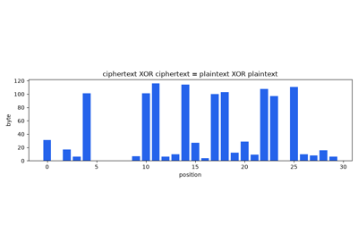
Vernam’s cipher and the two-time pad (Vernam, 1917)
1918 – ADFGVX and Painvin’s break#
On 5 March 1918, before its spring offensive, the German army introduced ADFGX, a field cipher that combined two old ideas; on 1 June it added a sixth coordinate letter, V, to make ADFGVX. A 6 × 6 Polybius square replaced each letter or digit with two coordinates from the letters A, D, F, G, V, X (chosen because they are distinct in Morse). The coordinate stream was then written in rows under a keyword and read off column by column in the keyword’s alphabetical order. Splitting a letter into two halves is fractionation; separating the halves by transposition destroys both the letter counts and the digraph counts.
With square coordinates \((r, s)\) and a column permutation \(\pi\) from the keyword,
Georges Painvin of the French Bureau du Chiffre worked out the system and broke a key on 2 June 1918 from two messages with matching openings. The messages he read warned of the attack on Compiègne, which the French were ready to meet.
Implementation: cybersecuritykit.classical.systems.adfgvx.adfgvx_encrypt()
reads the columns in the keyword’s alphabetical order, ties broken left to
right; the square and keyword are fixed by the caller, where the German
system changed both daily.
cybersecuritykit.classical.systems.adfgvx.break_adfgvx() tries every
column order of a known keyword length, keeps the one whose coordinate pairs
coincide most, and solves the remaining substitution by hill climbing;
Painvin instead aligned several same-key messages by hand.
References: D. Kahn, The Codebreakers (1967), ch. 9.
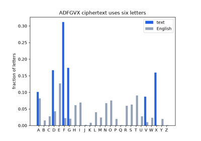
Fractionation and transposition (ADFGVX, 1918)
1922 – Friedman’s index of coincidence#
Kasiski’s method needs repeats, and short messages may have none. William Friedman, at the Riverbank Laboratories, found a statistic that measures how English-like a set of letters is without knowing the key. Pick two letters at random from a text; the index of coincidence is the probability that they agree:
A shift cipher does not change the IC, because it only relabels the counts. Split a keyword ciphertext into \(n\) columns: at the true period every column is a shift cipher and has the English IC, and at a wrong period the columns mix alphabets and fall towards random. Once the period is found, each column is broken with frequency analysis. Friedman’s pamphlet turned cryptanalysis into applied statistics.
Implementation: cybersecuritykit.classical.systems.coincidence.coincidence_profile()
averages the IC of the columns for each trial period and
cybersecuritykit.classical.systems.coincidence.break_vigenere() solves
the columns by \(\chi^2\).
References: W. F. Friedman, The Index of Coincidence and Its Applications in Cryptography, Riverbank Publication No. 22 (Geneva, IL: Riverbank Laboratories, 1922).
1929 – Hill’s matrix cipher and its known-plaintext break#
Lester Hill, a mathematician at Hunter College, made encryption an algebraic operation. A block of \(n\) letters becomes a column vector, and the key is an \(n \times n\) matrix \(K\) that is invertible modulo 26 (its determinant shares no factor with 26):
Every ciphertext letter depends on every letter of its block, so frequency analysis of single letters fails. Linearity is also the weakness. Given \(n\) plaintext blocks forming an invertible matrix \(P\) and their ciphertexts \(C\), the analyst solves \(K = C P^{-1} \bmod 26\) directly. A known-plaintext attack needs only \(n^2\) letters.
Implementation: cybersecuritykit.classical.systems.hill.hill_known_plaintext()
picks the first invertible set of complete blocks and solves for the key;
Hill also patented a mechanical device for 6 × 6 keys, which is not modelled.
References: L. S. Hill, “Cryptography in an algebraic alphabet”, The American Mathematical Monthly 36(6), 306–312 (1929).
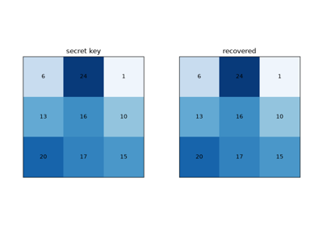
Matrix encryption and its known-plaintext break (Hill, 1929)
1932 – Rejewski’s characteristics of Enigma#
The Enigma I machine passed each letter through a plugboard, three rotors, a reflector and back, and stepped the rotors at every key press, so its substitution changed with every letter and its key space was enormous. Marian Rejewski of the Polish Cipher Bureau attacked it with permutation theory. In 1932 German operators enciphered each message key twice at the start of a message. Writing \(A, \dots, F\) for the machine’s permutations at the first six positions, the first and fourth letters of every message encode the same unknown, so the products
are known from a day’s traffic. Rejewski proved that the plugboard \(S\) only conjugates these products, \(AD = S\,(\cdot)\,S^{-1}\), and conjugation keeps the lengths of the cycles. The cycle lengths, the characteristic, depend on the rotor order and start alone. The Poles built a catalogue of characteristics for every rotor start and looked up the day’s setting.
Implementation: cybersecuritykit.classical.systems.enigma.rejewski_characteristic()
returns the cycle lengths of the three products for a rotor start;
cybersecuritykit.classical.systems.enigma.enigma_encrypt() uses the
Enigma I wirings with double stepping but leaves all ring settings at A.
References: M. Rejewski, “An application of the theory of permutations in breaking the Enigma cipher”, Applicationes Mathematicae 16(4), 543–559 (1980). DOI.
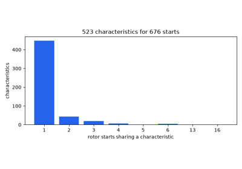
Characteristics that ignore the plugboard (Rejewski, 1932)
1940 – Turing’s bombe#
In May 1940 the Germans stopped doubling the message key, and Rejewski’s characteristics vanished. Alan Turing at Bletchley Park replaced them with cribs: guessed plaintext such as WETTERVORHERSAGE (weather forecast) in a routine report. Because the reflector makes Enigma reciprocal, no letter ever enciphers to itself, so a crib can only sit at offsets where no letter of it matches the ciphertext under it.
The crib’s letter pairs form a menu: a graph whose edges join plaintext and ciphertext letters at each position. A loop in the menu is a strong test. If the machine at positions \(i_1, \dots, i_k\) sends \(a_1 \to a_2 \to \dots \to a_1\), then
which a wrong rotor start almost never satisfies. The bombe, first installed in March 1940 and improved with Welchman’s diagonal board, ran through the 17,576 rotor starts of each rotor order at machine speed and stopped only on starts consistent with the menu.
Implementation: cybersecuritykit.classical.systems.bombe.bombe_search()
tests every rotor start against the crib for one rotor order;
cybersecuritykit.classical.systems.bombe.crib_menu() builds the menu and
its loops. There is no plugboard in the search, which the real bombe had to
deduce through its electrical loops.
References: A. M. Turing, Treatise on the Enigma (“Prof’s Book”, 1940), National Archives HW 25/3. D. Kahn, Seizing the Enigma (Boston: Houghton Mifflin, 1991).
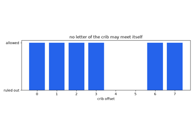
Searching rotor starts from a crib (Turing’s bombe, 1940)
1942 – Tutte’s break of the Lorenz cipher#
German high command sent teleprinter traffic through the Lorenz SZ40, called Tunny at Bletchley. It added two key streams to each 5-bit character: one from five regularly stepping chi wheels and one from five psi wheels that moved only when a motor wheel allowed. Nobody at Bletchley had seen the machine. In 1942 William Tutte, a chemistry graduate, reconstructed it from a single 4,000-character key stream that John Tiltman had recovered from a repeated message.
Tutte wrote the first impulse of the key in rows of a trial width and looked for repeats down the columns. Rows of 25 showed a pattern pointing to a period of 574, which is \(14 \times 41\), and rows of 41 showed it clearly. The statistical methods that followed later in 1942 used the delta of the stream, each bit added to the next. The psi wheels stand still for long runs, so their delta is mostly zero, and the delta of the key mostly equals the delta of the chi wheel. In rows of trial width \(w\), the delta bits in each column agree more often than chance when \(w\) is a multiple of the chi wheel’s period:
From the period of 41 for the first wheel Tutte worked out the whole logical structure of the machine, which led to the Colossus computers.
Implementation: cybersecuritykit.classical.systems.lorenz.tutte_period_test()
scores each trial width by column agreement of the delta stream;
cybersecuritykit.classical.systems.lorenz.lorenz_keystream() uses the
real wheel sizes but a single motor wheel and seeded random wheel patterns.
References: W. T. Tutte, “Fish and I” (lecture, University of Waterloo, 1998). J. Good, D. Michie and G. Timms, General Report on Tunny (1945), National Archives HW 25/4.
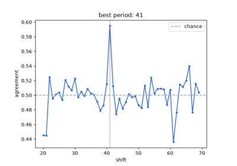
Recovering a Lorenz wheel from statistics (Tutte, 1942)
1949 – Shannon’s perfect secrecy#
Claude Shannon’s wartime report, published in 1949, asked what it means for a cipher to be unbreakable. He modelled the analyst as someone with a prior distribution over messages who updates it on seeing the ciphertext. A cipher has perfect secrecy when the posterior equals the prior:
A shift cipher used on a single letter with a uniform key is perfectly secret: every plaintext letter is equally consistent with the ciphertext letter. Used on a whole word, it is not, because only 26 of the possible plaintexts remain and Bayes’s rule concentrates the posterior on the English-looking one. Shannon proved that perfect secrecy needs at least as many keys as messages; the one-time pad meets the bound. The pad’s proof is covered in blockchainkit’s one-time pad entry.
Implementation: cybersecuritykit.classical.systems.shannon.shift_cipher_posterior()
applies Bayes’s rule to a small prior over words and
cybersecuritykit.classical.systems.shannon.one_time_pad_posterior()
shows the posterior unchanged; the priors are explicit dictionaries rather
than a language model.
References: C. E. Shannon, “Communication theory of secrecy systems”, Bell System Technical Journal 28(4), 656–715 (1949). DOI.
1949 – Shannon’s unicity distance#
Most ciphers are not perfectly secret, and the same paper asked how much ciphertext an analyst needs before only one key is plausible. English is redundant: it uses about 1.5 bits per letter of the \(\log_2 26 \approx 4.7\) available, so most letter strings are not English. Each ciphertext letter rules out a share of the keys, and the key is fixed once the total redundancy exceeds the key’s entropy:
A simple substitution has \(26!\) keys, \(H(K) \approx 88.4\) bits, and with \(D \approx 3.2\) bits per letter its unicity distance is about 28 letters. A shift cipher’s is under two letters. Shannon’s formula explains why long messages on one key were always the analyst’s best hope.
Implementation: cybersecuritykit.classical.systems.shannon.unicity_distance()
takes the key-space size and an assumed letter entropy (default 1.5 bits),
treating redundancy as a constant rather than estimating it from text.
cybersecuritykit.classical.systems.shannon.spurious_shift_keys() counts
the surviving shift keys on a real ciphertext, using a simple test (fewest
letter pairs missing from an English sample) in place of a reader.
References: C. E. Shannon, “Communication theory of secrecy systems”, Bell System Technical Journal 28(4), 656–715 (1949). DOI.
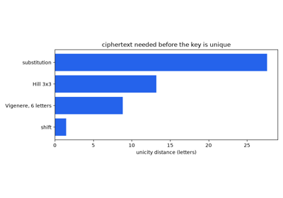
How much ciphertext fixes the key (Shannon’s unicity distance, 1949)
1995 – Jakobsen’s hill climbing#
A general substitution cipher has \(26! \approx 4 \times 10^{26}\) keys, far too many to try. Thomas Jakobsen showed that a computer does not need to: start from the key that matches ciphertext letter frequencies to English ones, try swapping pairs of key letters in a fixed order (adjacent pairs first, then pairs further apart), and keep a swap whenever the decryption scores better. The score is the log-likelihood of the decryption’s bigrams under English statistics,
and the climb stops when no swap improves it. Jakobsen’s fast version updates the bigram counts instead of re-decrypting, and solves a few hundred letters of ciphertext in moments. Hill climbing replaced hand methods for nearly every classical cipher.
Implementation: cybersecuritykit.classical.systems.hillclimb.hill_climb_substitution()
follows Jakobsen’s swap order from the frequency-matched key, adds restarts
from seeded random keys to escape poor local maxima, and rescores each
candidate in full rather than updating counts; the bigram table comes from a
short original corpus in cybersecuritykit.classical.utils.english
rather than a large reference text.
References: T. Jakobsen, “A fast method for cryptanalysis of substitution ciphers”, Cryptologia 19(3), 265–274 (1995). DOI.
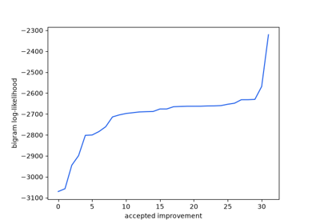
Hill climbing a substitution key (Jakobsen, 1995)
2020 – The Zodiac 340 solved#
A homophonic cipher gives common letters several symbols, so that single symbol counts come out nearly flat and al-Kindi’s method fails. The Zodiac Killer’s 340-symbol cipher of 1969 resisted analysts for 51 years. In December 2020 David Oranchak, Sam Blake and Jarl Van Eycke solved it with Van Eycke’s AZdecrypt, a hill-climbing and annealing solver, once Blake’s survey of transpositions found the diagonal reading order the writer had used.
The solver assigns each symbol a letter, scores the decryption by English n-gram statistics as in the 1995 entry, and changes one symbol at a time. Simulated annealing accepts a worse key with probability
so early in the search it can leave a local maximum. The symbols still have to follow English letter pairs, and that is enough to recover the mapping.
Implementation: cybersecuritykit.classical.systems.homophonic.solve_homophonic()
anneals a symbol-to-letter mapping scored by bigrams from the toy corpus; it
has no transposition step, and on a long seeded text it reads most, not all,
of the plaintext.
References: D. Oranchak, S. Blake and J. Van Eycke, “The solution of the Zodiac Killer’s 340-character cipher”, Cryptologia (2024). DOI.
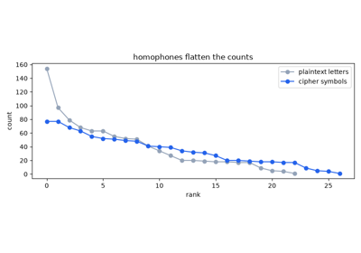
Annealing a homophonic cipher (the Zodiac 340, 2020)